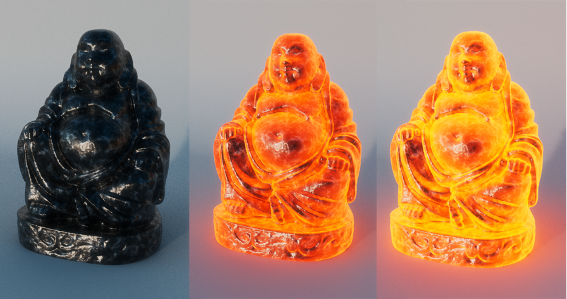
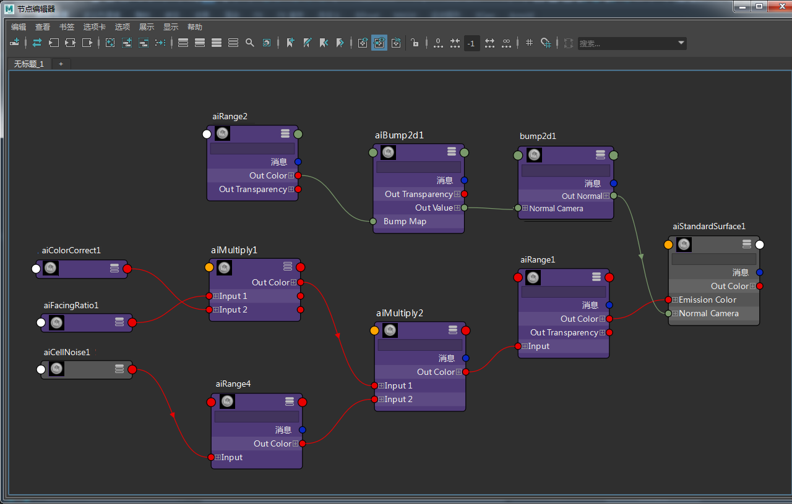

本简单教程演示如何创建白炽灯金属材质。它使用各种着色器，如连接到 standard_surface 着色器的 emission_color 的 facing_ratio、范围、相乘和 cell_noise。非常感谢 Slava Sych 为本教程提供的帮助。
有关本教程中使用的着色器，请单击此处。
创建一个 standard_surface 着色器，并将其指定给您的模型。
创建 cell_noise 着色器 (cell_noise1)，并更改以下参数：
图案(Pattern)：worley2
相加(Additive)：启用
倍频程(Octaves)：4
间隙度(Lacunarity)：1.76
振幅(Amplitude)：0.72
缩放 XYZ(Scale XYZ)：25 25 25（请记住，缩放值取决于模型的大小）。
创建一个范围 着色器，并将其连接到 standard_surface 着色器的 base_weight。 将 cell_noise 着色器连接到 range3 的“输入”(Input)。更改以下参数：
input_min：0.249
output_min：0.3
output_max：0.7
平滑步长：启用
创建另一个范围着色器，并更改以下参数：
input_min：0.3
input_max：0.7
output_min：0.1
平滑步长：启用
创建 bump2D 着色器，并将 bump_height 更改为 0.02。将范围 着色器 (range2) 连接到 bump2d 着色器中的 bump_map， 并将 bump2d 着色器连接到 standard_surface 着色器的法线。
创建一个 facing_ratio 着色器，并更改以下参数：
偏差：0.6
增益：0.48
线性：启用
反转：启用
将 facing_ratio 着色器和 color_correct 着色器连接到相乘着色器 (multiply1)。
创建另一个范围着色器，并更改以下参数：
input_min：0.249
input_max：0.484
output_min：0.7
output_max：1
启用“平滑步长”(Smoothstep)
将 cell_noise 着色器 (cell_noise1) 连接到范围 着色器 (range4) 的输入。
创建一个相乘 着色器 (multiply2)。 * 将 *multiply1 连接到 multiply2 的“输入 1”(Input 1)。
将范围 着色器 (range4) 连接到 multiply2 的“输入 2”(Input 2)。
创建一个范围 着色器。
将相乘 着色器 (multiply2) 连接到范围 着色器 (range1) 的输入。对于较高的颜色强度值，需要这样。
将范围 着色器 (range1) 连接到 standard_surface 着色器的 emission_color。
现在，可以使用 emission_weight （0 到 1）控制白炽度。如果您需要更高强度，请在范围*着色器 *(range1) 中增加 output_max 值。

最终的着色网络